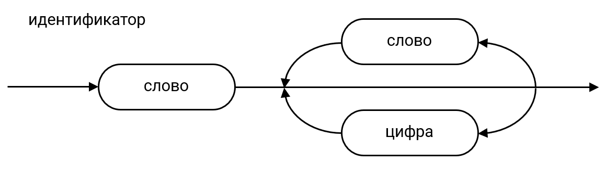

Синтаксне конструкције језика¶
Синтаксне конструкције програмских језика обично се представљају метајезицима или синтаксним дијаграмима.
Метајезик¶
Метајезик је језик дефинисан скупом правила помоћу којег се могу дефинисати синтаксно-правилне конструкције програмског језика. У доступној литератури, још од програмског језика Алгол (енгл. Algol - ALGOrithmic Language), најчешће коришћен метајезик за опис програмских језика зове се Бакус–Наурова форма, Бакусова нотација, Бакусова нормална форма или скраћено БНФ. Џон Бакус и Питер Наур су развили овај метајезик помоћу којег се, са коначним бројем реченица тј. металингвистичких формула, могу описати синтаксна правила било ког програмског језика.
Касније је БНФ проширена од стране Никлауса Вирта, творца програмског језика Паскал (енгл. Pascal) и названа проширена Бакус-Наурова форма или скраћено ЕБНФ (енгл. EBNF - Extended Backus-Naur Form). Након проширења, ЕБНФ је коришћена у неколико варијанти и коначно стандардизована 1996. године од стране Међународне организације за стандарде ISO у стандарду ISO/IEC 14977.
Металингвистичке формуле¶
Металингвистичка формула се састоји из леве и десне стране раздвојене
универзалним метасимболом ::= који се чита „по дефиницији је”. Општи облик
металингвистичке формуле може се представити на следећи начин:
<металингвистичка променљива>::=<металингвистички израз>
Металингвистичка променљива може бити реч или група речи које представљају
називе синтаксних конструкција. Металингвистички израз гради се од
металингвистичких променљивих и металингвистичких константи, уз коришћење симбола
| који има значење „или” . На пример:
<цифра> ::= 0 | 1 | 2 | 3 | 4 | 5 | 6 | 7 | 8 | 9
<слово> ::= _ | a | b | c | d | e | f | g | h | i | j | k | l | m
| n | o | p | q | r | s | t | u | v | w | x | y | z
| A | B | C | D | E | F | G | H | I | J | K | L | M
| N | O | P | Q | R | S | T | U | V | W | X | Y | Z
<идентификатор> :== <слово> | <идентификатор><слово> | <идентификатор><цифра>
У првој металингвистичкој формули дефинисана је металингвистичка променљива
цифра металингвистичким изразом 0 | 1 | 2 | 3 | 4 | 5 | 6 | 7 | 8 | 9.
Ту металингвистичку формулу можеш прочитати на следећи начин: „Цифра је по
дефиницији 0 или 1 или 2 или 3 или 4 или 5 или 6 или 7 или 8 или 9”. На
исти начин можеш прочитати и шта је слово.
У следећој металингвистичкој формули дефинисана је металингвистичка променљива
идентификатор. Њу можеш прочитати на следећи начин: „Идентификатор је по
дефиницији слово или идентификатор за којим следи слово или идентификатор
коме је придружена цифра, што значи да идентификатор може бити било који
елемент из дефинисаног скупа слова, којем је придружен још један елемент из
скупа слова или цифара, којем је придружен још један елемент из скупа слова или
цифара, итд.”
То значи да идентификатор може бити Ocena, x1, _x1y1 итд. То такође значи
да идентификатор не може бити 1x јер је први елемент цифра, или x* јер се
* не налази у дефинисаним скуповима цифара или слова, итд.
Пошто се у металингвистичкој формули идентификатора индентификатор појављује
и на левој и на десној страни, каже се да је та металингвистичка формула
рекурзивна.
Синтаксни дијаграми¶
Синтаксни дијаграми визуелно представљају металингвистичке формуле. На пример, металинвистичку формулу која дефинише идентификатор можеш представити синтаксним дијаграмом на следећи начин:
{kind=link}